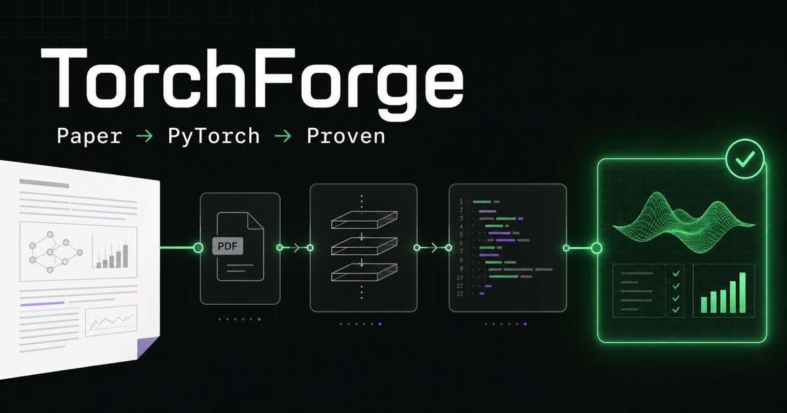

TorchForge
A local-first compiler pipeline that turns transformer papers into inspectable, executable PyTorch modules.
Built an evidence-preserving workflow that extracts papers, parses architecture topology, generates guarded code, and validates structure, gradients, devices, and runtime behavior through a CLI and browser workspace.
4explicit phases
109MBERT parameters verified
3compute backends